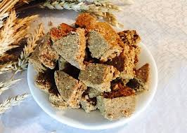

Жент
Жент (қоспа) – аса кәделі дастарқан дәмі. Ол қыста қатпайтын, жазда бұзылмайтын өте дәмді тағам. Жент былғау шеберлікті талап етеді. Ақталған тарыны келіге түйіп (диірменге немесе аз—аздап кофе тартқышқа салып) ұнтақтайды. Оған құмшекер, ұнтақталған ірімшік салып араластырады. Содан соң қазанға жылқының майын құйып ысытып, жаңағы араластырған тары мен ірімшікті салып, оттың болмашы табында араластырады. Жент майды бойына сіңірген соң ыдысқа салынып, салқын жерге қойылады. Әдетте жент ешкінің немесе қойдың қарнына салып сақталады. Ол ауа өткізбейді де, жент өзінің иісін, дәмін жоймай, ерімей жақсы сақталады. Жылқы майы болмағанда сары майға былғаса да болады (тоң майға араластыруға болмайды, ол қатып қалады да, жеуге жайсыз болады). Жент көбінесе соғым сойған кезде әзірленеді. 5 стақан тары жармасы, 4 стақан кепкен ірімшік, 2 стақан құмшекер, 2 стақан май керек. Майға илеп пісіріп кептірген бауырсақтың ұнтақталғанын, не бидай талқанын және аздап мейіз қосуға болады. Майсөк (майтары) - ақтаған тарыны (сөкті) майға қуырып дайындалатын тағам. Майсөкті дайындағанда қойдың құйрық майын турап шыжғырып, шыжығын алмаған күйінде ақтаған тарыны (сөкті) салып қуырады. Майсөкті сол күйінде немесе шайға салып жеуге де болады. Қойдың құйрық майы болмағанда жылқының майына, сары майға, тортасын айырған майға, кейде тіпті тоң майға да құырып әзірлейді. Майсөк дастарқан сәнін келтіретіп тағам ғана емес, жолаушылар жиі пайдаланатын түз тағамына да жатады
